Gabo se viste de Mundial
Experiencia significativa en educación inicial de la Institución Educativa Gabo, de Cartago, tal como la presentaron sus maestras en el compendio del colectivo Trazos de Infancia.
PDF · 11 págs. · 396 KBNota de edición. En el compendio original, esta experiencia no trae la ficha de identificación (por eso no figuran sus maestras) y su texto empieza a mitad de frase, sin rótulo. Se publica desde donde hay texto.
Gabo, tomando como eje motivador el Mundial de Fútbol 2026 para generar experiencias de aprendizaje significativas, lúdicas e integradoras.
La propuesta tuvo como propósito principal fortalecer la participación activa de las familias en los procesos educativos, promoviendo espacios de encuentro, acompañamiento y construcción conjunta de experiencias desde el hogar y la escuela. A través de actividades relacionadas con el Mundial, se buscó vincular los intereses de los niños con diferentes dimensiones de su desarrollo, reconociendo que el aprendizaje en la primera infancia se potencia cuando parte de experiencias cercanas, motivadoras y significativas.
Durante el proyecto se desarrollaron diversas propuestas pedagógicas relacionadas con las mascotas del Mundial, los números y el conteo, las emociones, los colores, los países, el juego, la expresión artística, la motricidad y la convivencia, entre otros aprendizajes. Estas experiencias permitieron fortalecer habilidades cognitivas, comunicativas, corporales y socioemocionales, al tiempo que favorecieron la participación, la creatividad, la curiosidad y el disfrute por aprender.
De manera especial, el proyecto permitió abordar el conteo y reconocimiento de números, la identificación y expresión de emociones, el seguimiento de instrucciones, el desarrollo de la motricidad fina y gruesa, la expresión oral y artística, así como valores relacionados con el respeto, el trabajo en equipo, la solidaridad y la convivencia. Las actividades se diseñaron desde el juego y la exploración, favoreciendo la participación de los niños de acuerdo con sus capacidades, intereses y ritmos de aprendizaje.
La participación de las familias fue un componente fundamental, ya que permitió trasladar algunas experiencias pedagógicas al contexto del hogar, fortaleciendo los vínculos entre familia, escuela y estudiante. Las evidencias compartidas, las actividades en familia y el acompañamiento durante las propuestas demostraron que la corresponsabilidad favorece experiencias educativas más enriquecedoras y significativas.
Problema o necesidad
En la educación inicial es fundamental generar experiencias de aprendizaje significativas que motiven a los niños y fortalezcan la participación de las familias. Sin embargo, en ocasiones se evidencia poco interés por algunas actividades académicas tradicionales y limitadas oportunidades para relacionar los acontecimientos del entorno con los procesos educativos.
La realización del proyecto «Gabo se viste de Mundial» surge como una necesidad de aprovechar el entusiasmo que genera el Mundial de Fútbol para promover el aprendizaje integral de los estudiantes. A través de esta temática se busca fortalecer habilidades cognitivas, sociales, comunicativas y motrices mediante actividades lúdicas relacionadas con los países participantes, sus culturas, banderas, ubicación geográfica, tradiciones y valores como el respeto, el trabajo en equipo y la sana convivencia.
Además, este proyecto permite vincular activamente a las familias en el proceso educativo, favoreciendo espacios de interacción en casa y fortaleciendo los lazos entre la escuela y el hogar. De esta manera, el Mundial se convierte en una estrategia pedagógica motivadora que despierta la curiosidad, fomenta la investigación y promueve aprendizajes significativos en los niños y niñas.
Necesidad identificada:
- Incrementar la motivación y participación de los estudiantes.
- Favorecer el aprendizaje a través del juego y situaciones reales del entorno.
- Fortalecer la integración familia-escuela.
- Promover valores de respeto, tolerancia, trabajo en equipo y sana competencia.
- Desarrollar habilidades comunicativas, matemáticas, artísticas y motrices de manera transversal.
- Acercar a los niños al conocimiento de diferentes culturas y países del mundo.
Este proyecto convierte un evento de interés mundial en una oportunidad pedagógica enriquecedora para el desarrollo integral de los estudiantes.
Objetivo(s)
Fortalecer la corresponsabilidad y el vínculo entre las familias y la escuela, a través de experiencias culturales, deportivas y recreativas inspiradas en el Mundial de Fútbol, para potenciar el desarrollo integral, el conteo básico, la inteligencia emocional y el reconocimiento de la diversidad en los estudiantes de primera infancia, respondiendo a la necesidad de superar la distancia entre el hogar y la institución mediante metodologías activas y contextualizadas que estimulen la motivación por aprender.
Reconocer: Diferentes países participantes del Mundial como Colombia, Argentina, Brasil, Ecuador, México, Canadá y Estados Unidos, a través de sus banderas, costumbres, tradiciones y expresiones culturales.
Promover: Valores como el respeto, la amistad, la solidaridad, la tolerancia y el trabajo en equipo mediante actividades lúdicas y deportivas.
Desarrollar: Habilidades comunicativas, motrices, artísticas y cognitivas a través de experiencias significativas relacionadas con la temática del Mundial.
Fomentar: la creatividad y la imaginación de los estudiantes mediante la elaboración de manualidades, representaciones culturales, muestras artísticas y actividades recreativas.
Fortalecer: la convivencia escolar y el sentido de pertenencia institucional a través de la participación activa de toda la comunidad educativa.
Vincular a los padres de familia como agentes fundamentales del proceso educativo, promoviendo su participación en actividades que favorezcan la integración entre la escuela y el hogar.
Valorar: la diversidad cultural del mundo, reconociendo las diferencias como una oportunidad para aprender, compartir y convivir en armonía.
Generar: espacios de sana recreación y aprendizaje donde los niños sean protagonistas de experiencias significativas, alegres y enriquecedoras.
Metodología
1. Planeación La experiencia significativa «Gabo se viste de Mundial» fue planeada de manera interdisciplinaria, tomando como referencia los intereses de los estudiantes frente al Mundial de Fútbol 2026 y articulándolos con los propósitos formativos del PEI y las dimensiones del desarrollo infantil.
Estrategias y acciones implementadas:
- Diseño de una secuencia pedagógica basada en proyectos de aula.
- Integración de actividades relacionadas con los países participantes, banderas, culturas, ubicación geográfica y valores deportivos.
- Organización de actividades lúdicas, artísticas, recreativas y familiares.
Elaboración de cronogramas de trabajo y Mecanismos e instrumentos:
- Planeaciones pedagógicas.
- Cronogramas de actividades.
- Observación directa.
- Registros de participación.
- Evidencias fotográficas y producciones de los estudiantes.
2. Implementación
La ejecución del proyecto se desarrolló mediante experiencias significativas que permitieron a los estudiantes aprender jugando, explorando, creando y compartiendo con sus familias.
Estrategias y acciones implementadas:
- Ambientación de los espacios con elementos mundialistas.
- Jornadas temáticas representando diferentes países.
- Elaboración de banderas, murales y material artístico.
- Actividades de conteo, clasificación y seguimiento de resultados deportivos.
- Juegos cooperativos y actividades motrices inspiradas en el fútbol.
- Participación de las familias en actividades desarrolladas en casa y en el aula.
Mecanismos e instrumentos:
- Guías pedagógicas.
- Talleres familiares.
- Material concreto y audiovisual.
- Portafolios de evidencias.
- Diarios de campo y registros anecdóticos.
Innovación
La experiencia significativa «Gabo se viste de Mundial» se caracteriza por su componente innovador al transformar un acontecimiento de interés mundial en una estrategia pedagógica integradora que favorece el aprendizaje significativo y el desarrollo integral de los estudiantes de educación inicial.
La innovación radica en la utilización del Mundial de Fútbol como un eje articulador de los procesos de enseñanza y aprendizaje, permitiendo relacionar de manera creativa y contextualizada las diferentes dimensiones del desarrollo infantil con situaciones reales y cercanas a los intereses de los niños.
Procesos educativos novedosos implementados
- Integración de contenidos académicos, artísticos, culturales y deportivos en una misma experiencia de aprendizaje.
- Uso de metodologías activas basadas en el juego, la exploración, la observación y el aprendizaje por proyectos.
- Vinculación permanente de las familias como participantes activos en el proceso educativo.
- Desarrollo de actividades que conectan el contexto global del Mundial con las experiencias cotidianas de los estudiantes.
- Implementación de estrategias que promueven la investigación, la curiosidad y el descubrimiento de otras culturas y países.
Recursos tecnológicos y no tecnológicos utilizados
Recursos tecnológicos:
- Videos educativos sobre países, culturas y eventos deportivos.
- Presentaciones digitales e imágenes interactivas.
- Comunicación con las familias mediante medios digitales.
- Registro fotográfico y audiovisual de las experiencias.
Recursos no tecnológicos:
- Tablas de posiciones adaptadas para niños.
- Banderas, mapas, fichas pedagógicas y material manipulativo.
- Murales temáticos y carteleras.
- Material reciclable para la elaboración de trabajos artísticos.
- Juegos motrices- partidos por grados y actividades recreativas.
- Inauguración del proyecto
Cambios significativos en materiales, métodos y contenidos
La experiencia permitió trascender las actividades tradicionales del aula para construir ambientes de aprendizaje dinámicos, participativos y contextualizados. Los contenidos fueron abordados de manera interdisciplinaria, integrando:
- Matemáticas mediante conteo, clasificación y registro de puntajes.
- Lenguaje a través de conversaciones, narraciones y descripciones.
- Ciencias sociales mediante el reconocimiento de países, culturas y tradiciones.
- Educación artística con la elaboración de banderas, murales y representaciones.
- Educación física mediante actividades deportivas y juegos cooperativos.
Aportes al proceso de enseñanza-aprendizaje
- Incrementó la motivación y el interés de los estudiantes por aprender.
- Favoreció aprendizajes significativos al partir de una temática cercana a sus intereses.
- Potenció habilidades comunicativas, cognitivas, motrices y socioemocionales.
- Fortaleció el trabajo colaborativo y la participación activa de las familias.
- Promovió valores como el respeto, la tolerancia, la solidaridad y el juego limpio.
- Desarrolló el pensamiento crítico mediante la observación, comparación y análisis de información.
- Enriqueció la práctica pedagógica mediante la implementación de estrategias innovadoras y contextualizadas.
«Gabo se viste de Mundial» constituye una experiencia innovadora porque transforma un evento de impacto mundial en una oportunidad pedagógica integral que fortalece los procesos de enseñanza y aprendizaje, fomenta la participación de la comunidad educativa y contribuye al desarrollo de competencias y habilidades esenciales para la formación de los estudiantes.
Seguimiento y valoración
La experiencia significativa «Gabo se viste de Mundial» ha evolucionado progresivamente a partir de los procesos de reflexión pedagógica, evaluación continua y análisis de los resultados obtenidos durante su implementación. Estos ejercicios de autorreflexión han permitido identificar fortalezas, oportunidades de mejora y nuevas posibilidades para enriquecer la experiencia y hacerla más pertinente a las necesidades e intereses de los estudiantes.
Inicialmente, la propuesta estaba centrada en actividades relacionadas con el conocimiento de los equipos participantes y algunos aspectos deportivos del Mundial. Sin embargo, a partir de la observación de las respuestas de los estudiantes y del acompañamiento de las familias, la experiencia se transformó en un proyecto pedagógico transversal que integra las diferentes dimensiones del desarrollo infantil y diversas áreas del conocimiento.
Como resultado de los procesos evaluativos, se fortalecieron aspectos como:
- La incorporación de metodologías más participativas y centradas en el estudiante.
- La integración de actividades artísticas, culturales, comunicativas, matemáticas y motrices alrededor de una misma temática.
- El aumento de espacios de participación familiar como estrategia para fortalecer los aprendizajes en el hogar.
- El uso de recursos didácticos más variados y contextualizados.
- La implementación de estrategias de seguimiento y documentación de evidencias para valorar los avances de los estudiantes.
Asimismo, la experiencia ha pasado de enfocarse únicamente en el evento deportivo a promover el reconocimiento de la diversidad cultural, el respeto por las diferencias, el trabajo en equipo, la convivencia pacífica y la formación en valores ciudadanos.
Los resultados obtenidos evidenciaron un mayor nivel de motivación, participación y compromiso de los estudiantes, lo que llevó a enriquecer la propuesta con nuevas actividades de exploración, investigación, juego y aprendizaje colaborativo. De igual manera, las familias asumieron un papel más activo en el proceso, aportando ideas, materiales y acompañamiento permanente.
La reflexión constante sobre la práctica pedagógica también permitió fortalecer la planeación, la articulación con el PEI y la integración curricular, convirtiendo la experiencia en una estrategia innovadora que trasciende la enseñanza de contenidos específicos para centrarse en el desarrollo integral de los niños y niñas.
En consecuencia, «Gabo se viste de Mundial» se ha transformado de una actividad temática relacionada con el fútbol a una experiencia significativa de aprendizaje que involucra a toda la comunidad educativa, promueve la construcción colectiva del conocimiento y favorece procesos educativos más dinámicos, inclusivos y contextualizados. Esta evolución ha permitido consolidar una práctica pedagógica cada vez más pertinente, reflexiva y enriquecedora para todos los participantes.
Resultados
La implementación de la experiencia significativa «Gabo se viste de Mundial» permitió alcanzar importantes logros en los estudiantes, las familias y la comunidad educativa, evidenciando el cumplimiento de los objetivos propuestos para fortalecer el aprendizaje integral a partir de una temática de interés para los niños.
1. Fortalecimiento de los aprendizajes significativos
Los estudiantes lograron construir nuevos conocimientos a partir de experiencias cercanas a su realidad e intereses, relacionando el Mundial de Fútbol con aprendizajes sobre países, culturas, símbolos, ubicación geográfica, conteo, clasificación y comunicación de ideas.
2. Desarrollo integral de los estudiantes
Se evidenciaron avances en las diferentes dimensiones del desarrollo infantil:
- Cognitiva: reconocimiento de países, banderas, números, conteo de puntajes y seguimiento de resultados.
- Comunicativa: ampliación del vocabulario, participación en conversaciones, descripción de experiencias y fortalecimiento de la expresión oral.
- Corporal: desarrollo de habilidades motrices mediante juegos, circuitos y actividades deportivas.
- Artística: expresión de la creatividad a través de dibujos, manualidades, murales y elaboración de elementos representativos de los países participantes.
- Socioafectiva: fortalecimiento de la autoestima, la cooperación y la interacción positiva con sus compañeros.
3. Fortalecimiento de valores y convivencia
La experiencia promovió valores como el respeto, la solidaridad, la tolerancia, la responsabilidad, el trabajo en equipo y el juego limpio, contribuyendo a una mejor convivencia dentro y fuera del aula.
4. Mayor motivación e interés por aprender
Los estudiantes mostraron altos niveles de participación, entusiasmo y compromiso durante las actividades propuestas, favoreciendo ambientes de aprendizaje más dinámicos y significativos.
5. Participación activa de las familias
Uno de los principales logros fue el fortalecimiento de la relación familia-escuela. Los padres acompañaron actividades en casa, participaron en la construcción de materiales y apoyaron el seguimiento de la tabla de posiciones del Mundial, convirtiéndose en aliados fundamentales del proceso educativo.
6. Fortalecimiento de la práctica pedagógica
La experiencia permitió a la docente implementar estrategias innovadoras, interdisciplinarias y contextualizadas, enriqueciendo los procesos de enseñanza y promoviendo ambientes de aprendizaje más participativos y motivadores.
7. Reconocimiento y valoración de la diversidad cultural
Los estudiantes tuvieron la oportunidad de acercarse al conocimiento de diferentes países, costumbres, idiomas, banderas y tradiciones, desarrollando actitudes de respeto y valoración hacia otras culturas.
8. Consolidación del trabajo colaborativo
La experiencia favoreció la articulación entre estudiantes, docentes y familias, fortaleciendo la construcción colectiva del conocimiento y el sentido de pertenencia hacia la institución educativa, interdisciplinarias y contextualizadas, enriqueciendo los procesos de enseñanza y promoviendo ambientes de aprendizaje más participativos y motivadores.
Maestras e institución
- Institución: Institución Educativa Gabo.
Así se ve en el libro
11 páginas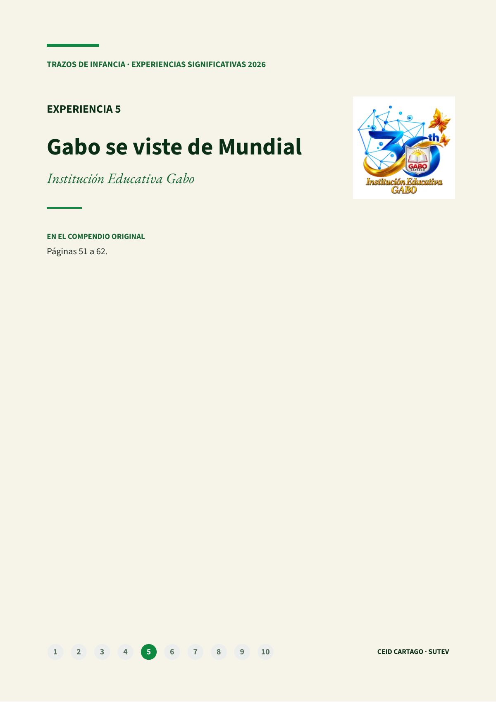
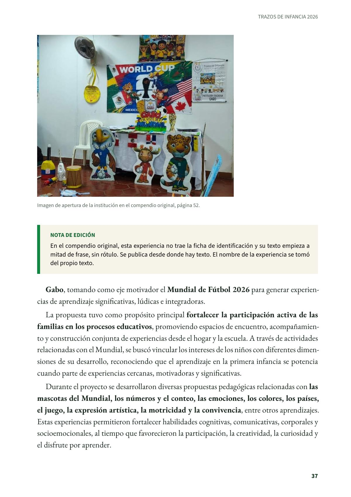
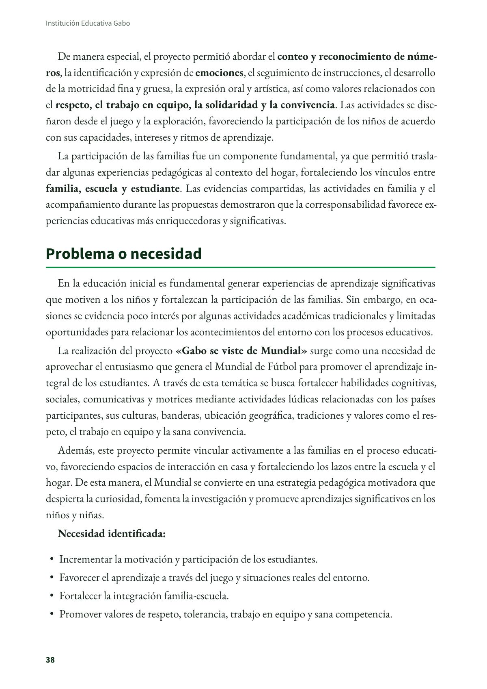
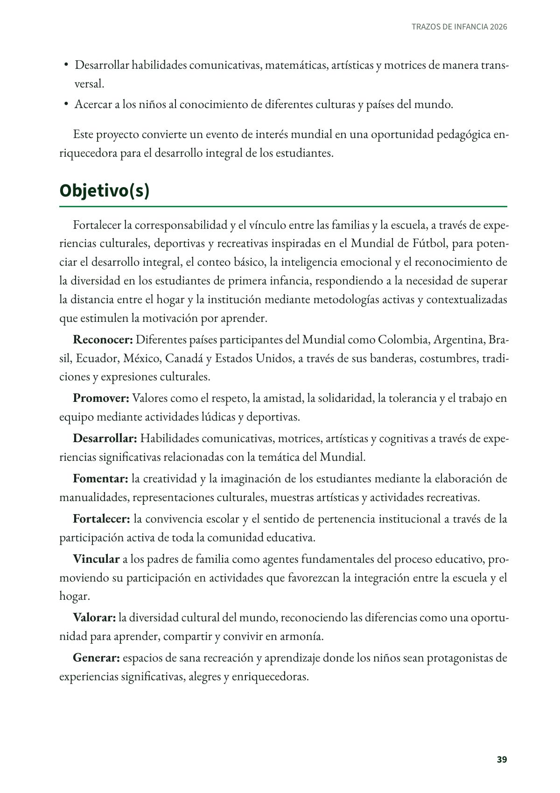
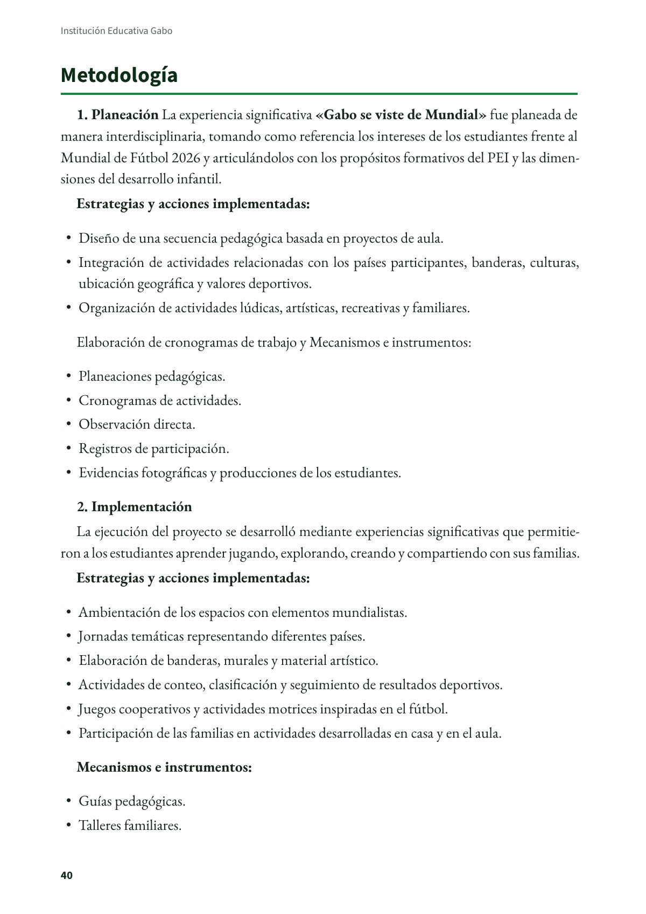
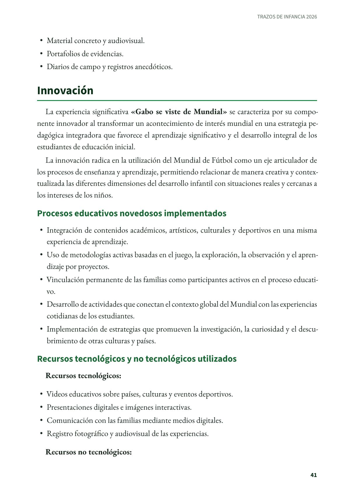
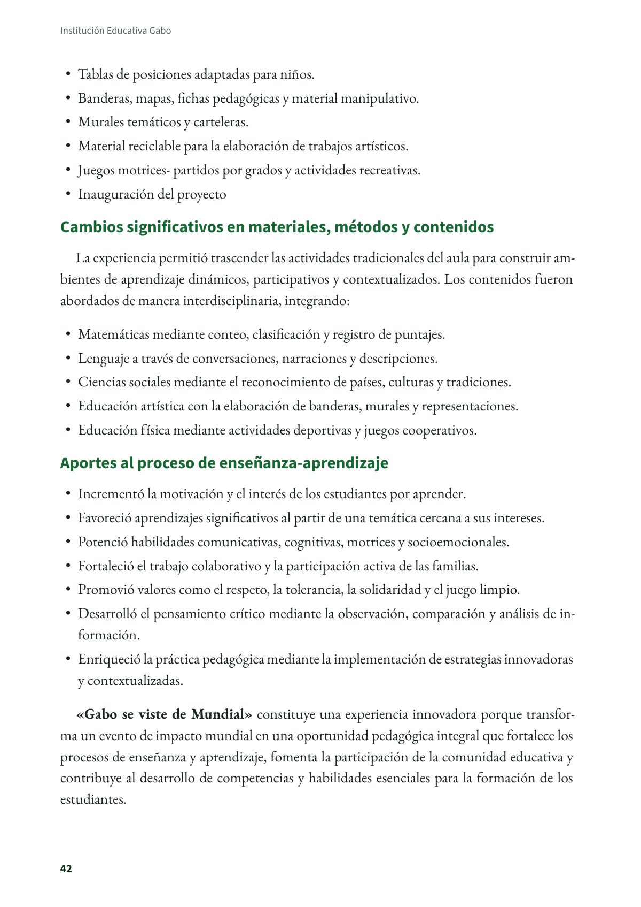
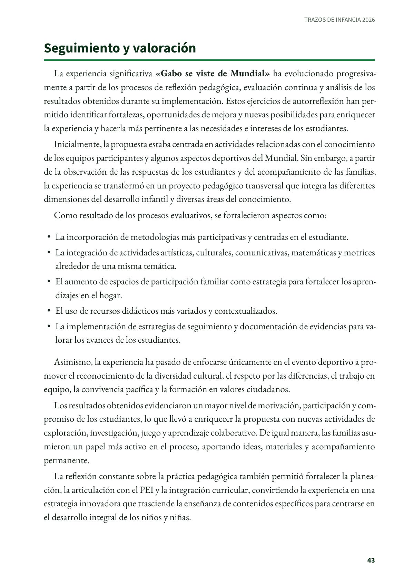
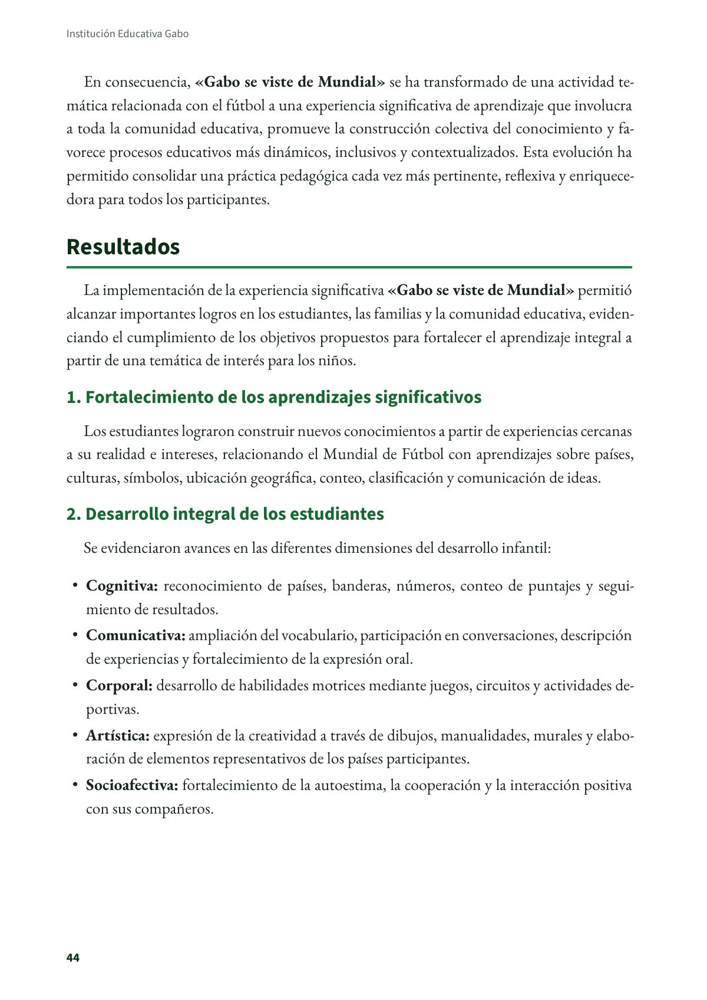
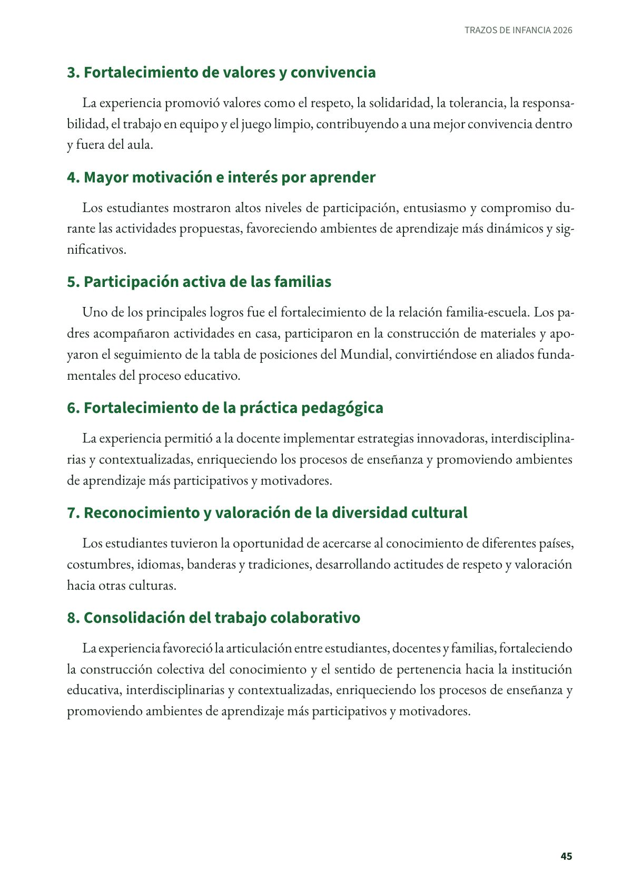
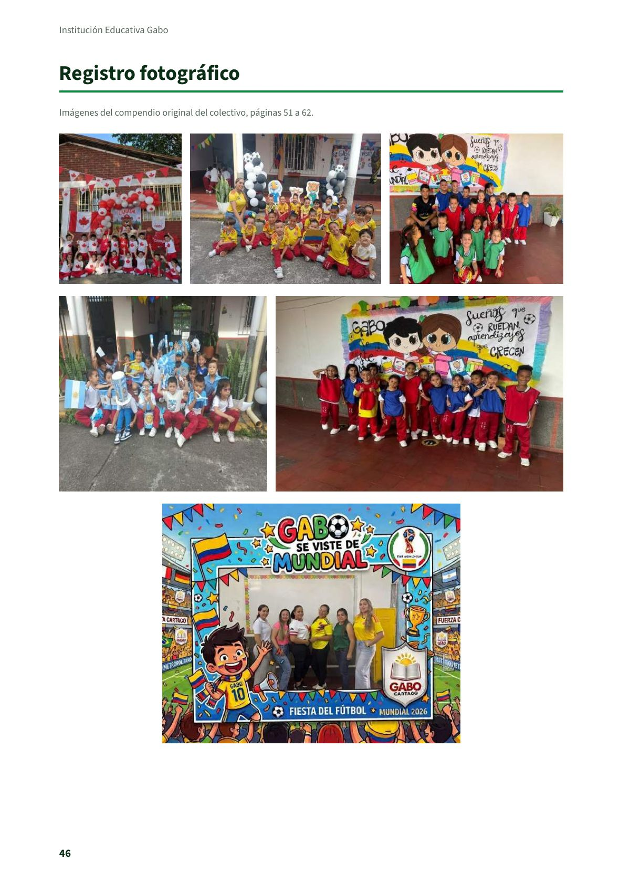